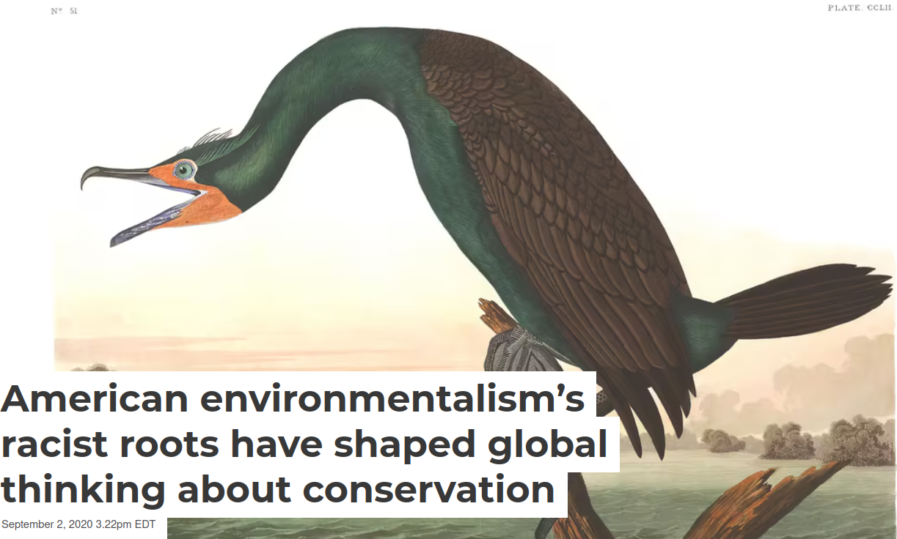
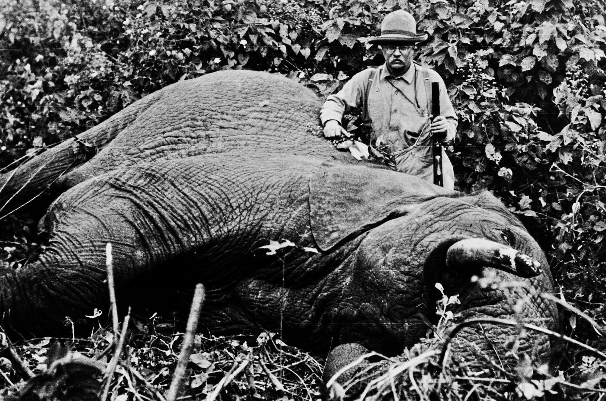
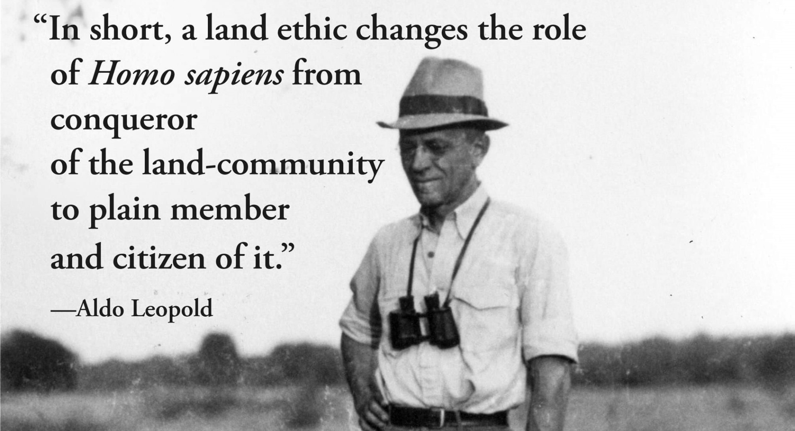
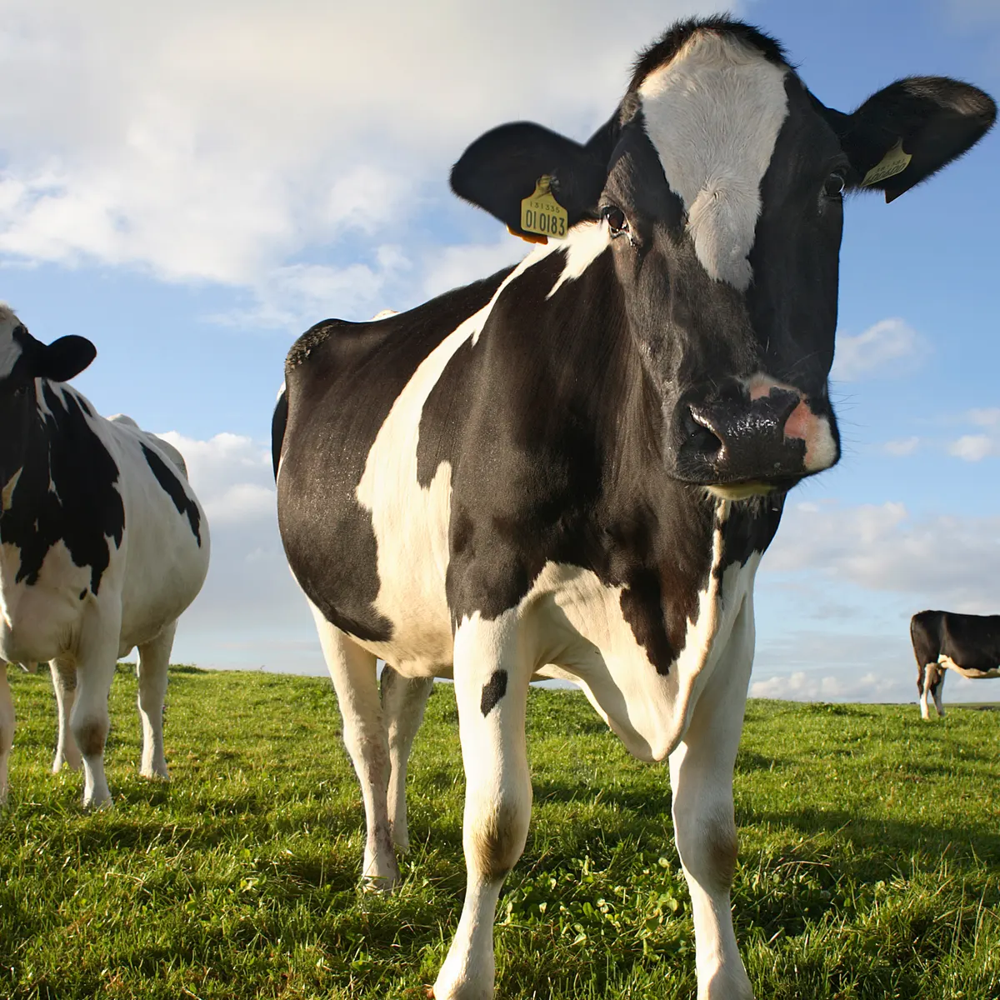

Section 3: Current Challenges in American Environmentalism
3.1 Environmental Justice
Justin Leinaweaver (Fall 2025)
Make an argument that ONE of the historical perspectives on wilderness is the “best” approach to managing the resources and needs of our community going forward
Argument paper with three premises and high quality evidence
Must include a strong counter-argument paragraph
The Environmental Justice Problem
Environmental Justice Issues: How did we get here?
Kashwan (2020) on Muir and Audubon
Mildenberger (2019) on Hardin
Pittman (2024) on redlining
Diem (2024) on NIMBY
Therefore, “American environmentalism’s racist roots have negatively impacted global conservation practices.”
Does American environmentalism have racist roots?



To Your Farm
Benefits = ?
Costs = ?
To Your Farm
Benefits = +1
Costs = -1
To the Commons
Benefits = +1
Costs = -1/x
Hardin’s argument is massively influential
Hardin gets the history wrong
Hardin gets the science wrong
Hardin gets the morality wrong
Hardin’s argument makes addressing climate change harder
Therefore, “[to] create a just and vibrant climate future, we need to … cast Hardin and his flawed metaphor overboard.”
1) Hardin’s argument is massively influential
2) Hardin gets the history wrong
3) Hardin gets the science wrong
Hardin’s “Science”:
Human reproduction is a “Tragedy of the Commons”
4) Hardin gets the morality wrong
4) Hardin gets the morality wrong
Hardin’s policy argument is for the “rich” world to:
Control the right to reproduction (don’t fill your lifeboat)
Seal our borders against immigration (protect your lifeboat)
Accept human suffering in the poor world as a signal to the poor to push for better governments
5) Hardin makes addressing climate change harder
Hardin’s argument is massively influential
Hardin gets the history wrong
Hardin gets the science wrong
Hardin gets the morality wrong
Hardin’s argument makes addressing climate change harder
Therefore, “[to] create a just and vibrant climate future, we need to … cast Hardin and his flawed metaphor overboard.”
Examples of Environmental Inequality in SGF
Review the data on Canvas, and
Find us a local example of the need for environmental justice